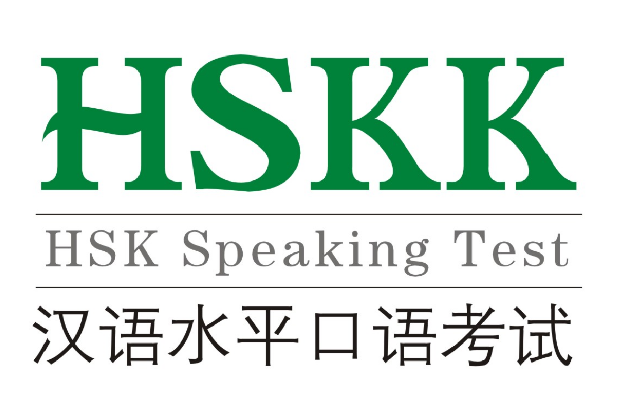

HSKK
한어수평고시 (중국어 간체자: 汉语水平考试, 정체자: 漢語水平考試, 병음: Hànyǔ Shuǐpíng
Kǎoshì, HSK)는 중국어 시험 중 하나이다. 약자로 HSK라고 불리며 외국인을 위한 중국어 시험으로
가장 권위가 있다. 대상은 외국인, 화교 등이다. 중국정부의 지원하에 북경어언대학 (北京语言大学)이
개발하였다. 현재 중국 교육부 국가한어수평고시위원회가 출제, 채점, 증서발급을 주관하며, 한국에서는
한국HSK실시위원회, HSK한국사무국이 HSK실시업무를 담당한다. 토익에 해당하는 비즈니스 한어수평
시, 그리고 아동 한어수평고시가 최근 소개되었다.